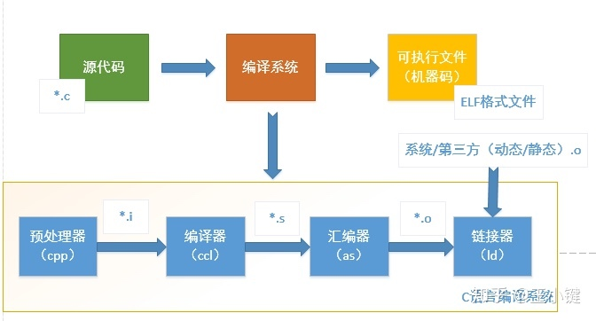
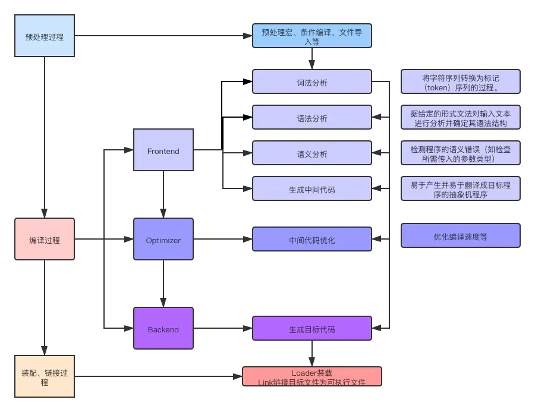
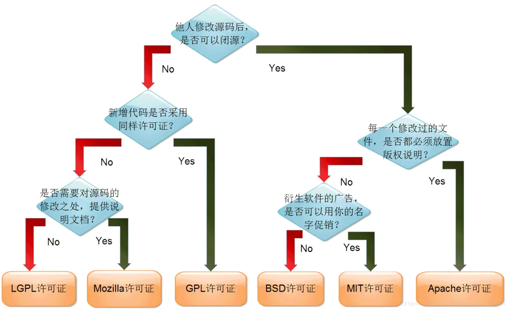

浅谈 C/C++ 编译流程和常见编译器
本文介绍下 C/C++ 编译器编译流程，然后详细介绍下主流的编译器 GCC 和 Clang(LLVM) 以及二者的对比。
为什么要了解编译器和编译流程
最近两年负责的项目基本都是 C/C++ 项目，除了技术上的提升之外，还有一个很明显的改变就是对「编译错误」的态度，以前十分讨厌编译问题，毕竟这种问题经常和电脑、操作系统、甚至和缓存有关，很浪费时间而且也觉得没啥收获。
被折磨了两年半之后，发现大多数编译问题基本都可以从编译的过程和原理的角度找到原因和解决办法，其实也是技术精进的过程。我现在就挺喜欢处理编译问题，遇到无法解决的编译问题说明我对编译过程还不足够了解，特别是一些比较诡异的问题，往往是隐藏着一些不为人知的小知识细节。
编译流程
使用编译型语言的技术人员每天都会接触编译，比如 C/C++、OC、Java、Kotlin 等等，只不过我们通常不用详细的了解编译过程，这些事情一般都是各种 IDE 帮我们完成，我们只需要点一个按钮即可。
基本编译流程
不同的编译器的编译流程基本都是一样的，简单来讲，一般包含预处理(Preprocessing)、编译(Compilation)、汇编(Assembly)、链接(Linking)这几个过程。

从上图可以看到，编译之前是源代码，编译之后是可执行文件。其中：
1. 预处理（生成 .i 文件）
这个步骤会去掉 #define、#ifdef、#else 等预编译处理指令，根据相关的编译参数选择相应的代码段，然后将不符合条件的逻辑删除。
然后还会将 #include 导入的头文件的内容拷贝过来，然后删掉 #include 指令。
还会删掉所有的注释，因为这些注释对编译过程没啥用。
添加行号和文件标识，以便编译时产生调试用的行号及编译错误警告行号。
2. 编译（生成 .s 文件）
这个过程主要是进行词法分析，语法分析，语义分析及优化后生成相应的汇编代码。
3. 汇编（生成 .o 文件）
汇编过程调用对汇编代码进行处理，生成机器能识别的机器码，保存在后缀为 .o 的目标文件中。
把汇编语言使用对应的处理器指令集翻译一下，让机器能理解并执行。
4. 链接（生成 .a .so 等二进制文件）
这个步骤就是把汇编得到的 .o 合并成一个二进制库文件。
链接有静态链接和动态链接两种。静态链接是指把静态库加入到可执行文件中去，这样可执行文件会比较大。链接器将函数的代码从其所在地（不同的目标文件或静态链接库中）拷贝到最终的可执行程序中。动态链接则是指链接阶段仅仅只加入一些描述信息，而程序执行时再从系统中把相应动态库加载到内存中去。
编译器的前端、中端、后端
编译从整体上分为上面提到的四个过程，从编译器的角度不会是这么简单，需要细化到每个步骤的每个细节。编译过程从编译器的角度可以分为前端、中端、后端三个模块和过程。
具体流程和上面介绍的一样，只是讲各个编译工作划分为三个过程。其中多了一个中间阶段，也就是下图中的 Optimizer，编译前端不是生成汇编文件，而是生成一种中间代码（IR，Intermediate Representation，有时也称 Intermediate Code，IC）。IR 是一种机器无关的表达，编译器会对 IR 进行一系列的优化，以便于加快编译速度等等。优化后的 IR 会交给编译后端进行汇编和生成字节码等后续流程。

主流编译器（GCC 和 Clang(LLVM)）
上面介绍了编译流程，以及编译器实现编译时的流程。下面介绍目前主流的编译器及其基本概念。
基本概念
首先，我们先弄清 GCC、Clang、LLVM 等概念，以及它们之间的关系。
目前主流的编译器套件有两个，GCC（GNU Compiler Collection） 以及 LLVM。所谓套件，就是一个一堆工具的合集。
GCC 是由 GNU 开发的，LLVM 是由苹果公司开发的。 最初苹果公司一直使用 GCC 作为官方的编译器。GCC 作为一款开源的编译器，一直做得不错，但 Apple 对编译工具会提出更高的要求。比如苹果需要 GCC 支持 OC、Swift 的新特性，但是 GCC 肯定不乐意搞，或者搞得很慢。所以苹果就自己搞了 LLVM。
GCC 和 LLVM 的编译架构是类似的，可以参考上图。我们平时接触的更多的是这两个编译套件的编译器前端：GCC（GNU Compiler Collection） 套件的编译器前端是 GCC（GNU C Compiler），最初这个 GCC 前端只能编译 C 语言，后续经过发展也支持了 C++、Java、Objective-C 等语言。这里 GCC 套件和 GCC 编译器前端的缩写完全一样，一般可以根据具体上下文确定具体指的是哪个。LLVM 套件的编译器前端是 Clang，目前支持 C/C++、Objective-C 等语言。
编译器前端一般也被叫做编译器，反正注意根据语境区分。。。
GCC 和 Clang 优势对比
毕竟 Clang 是苹果亲自开发的，所以相比于 GCC 速度快，占用内存小，兼容性好，有静态分析能力。Clang 使用 BSD 许可证，GCC 使用 GPL 许可证。

当然，GCC 也有自己的优点，比如支持 Java 语言，Clang 就不支持。
GCC 套件内容
既然是套件，肯定不止一个工具。GCC 除了编译器前后端等工具之外，还有一些处理二进制文件的工具 Binutils。
- addr2line
用来将程序地址转换成其所对应的程序源文件及所对应的代码行，也可以得到所对应的函数。该工具将帮助调试器在调试的过程中定位对应的源代码位置。
- as
主要用于汇编。
- ld
主要用于链接。
- ar
主要用于创建静态库。
- ldd
可以用于查看一个可执行程序依赖的共享库。
- objcopy
将一种对象文件翻译成另一种格式，譬如将 .bin 转换成 .elf、或者将 .elf 转换成 .bin 等。
- objdump
主要的作用是反汇编。
- readelf
显示有关 ELF 文件的信息。
- size
列出可执行文件每个部分的尺寸和总尺寸，代码段、数据段、总大小等。
LLVM 套件内容
- LLVM 核心库
LLVM 核心库提供了编译中后端能力。比如编译器中端（Optimizer），提供了汇编能力，生成不同 CPU 的机器码。
- Clang
编辑器前端，提供了代码静态分析能力，可以在源码阶段分析出潜在的代码问题。
- LLDB
源码调试工具。具体可以参考LLDB - 源码调试神器。
- libc++、compiler-rt、MLIR、OpenMP、polly、libclc、klee、LLD、BOLT
这些工具不常接触到，先知道有这个东西就行。具体可以参阅官方文档。
引用文献
本文编写过程中参阅了一些文章，在此列出。
转载请注明出处：浅谈 C/C++ 编译流程和常见编译器 - 专业点
欢迎关注我的公众号

推荐

公众号推荐
欢迎关注我的公众号一起愉快的交流。